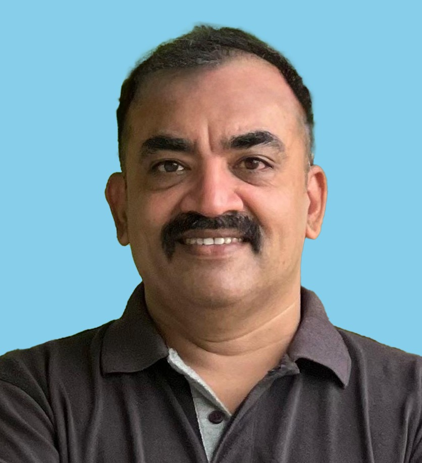

<!DOCTYPE html>
<html lang="en">
<head>
<meta charset="utf-8">
<meta name="viewport" content="width=device-width, initial-scale=1, viewport-fit=cover">
<title>Kaithangu | കൈത്താങ്ങ്</title>
<!-- WhatsApp & Social Media Rich Preview Meta Tags -->
<meta property="og:title" content="Kaithangu · കൈത്താങ്ങ് | 7 സൗജന്യ ജനസേവനങ്ങൾ ഒരു കുടക്കീഴിൽ">
<meta property="og:description" content="വിവാഹം, വിദ്യാഭ്യാസം, തൊഴിൽ, ആരോഗ്യം, നിയമം, കുടുംബം, അടിയന്തര സഹായം: സാധാരണക്കാർക്ക് 7 സൗജന്യ സേവനങ്ങൾ. &quot;ഞാൻ ഇല്ലാത്തപ്പോഴും ഈ സേവനം ഉണ്ടാകണം&quot; — People Service Mission Kerala.">
<meta property="og:image" content="https://oursupport.vercel.app/founder.png">
<meta property="og:image:secure_url" content="https://oursupport.vercel.app/founder.png">
<meta property="og:image:type" content="image/png">
<meta property="og:image:width" content="836">
<meta property="og:image:height" content="918">
<meta property="og:url" content="https://oursupport.vercel.app/">
<meta property="og:type" content="website">
<meta name="twitter:card" content="summary_large_image">
<meta name="twitter:title" content="Kaithangu · കൈത്താങ്ങ് | 7 സൗജന്യ ജനസേവനങ്ങൾ">
<meta name="twitter:description" content="വിവാഹം, വിദ്യാഭ്യാസം, തൊഴിൽ, ആരോഗ്യം, നിയമം, കുടുംബം, അടിയന്തര സഹായം. &quot;SERVICE BEFORE SELF&quot; — People Service Mission Kerala.">
<meta name="twitter:image" content="https://oursupport.vercel.app/founder.png">
<meta name="description" content="Kaithangu (കൈത്താങ്ങ്) - 7 free public welfare services for Kerala: Matrimony, Education, Jobs, Health, Legal Desk, Family Support, and Emergency Relief.">
<link href="https://fonts.googleapis.com/css2?family=Noto+Sans+Malayalam:wght@400;600;800&family=Poppins:wght@400;600;700&display=swap" rel="stylesheet">
<style>
:root{--bg:#F1F5F4;--card:#fff;--ink:#16232B;--mute:#5A6B72;--teal:#12504B;--tealx:#0C3A36;--gold:#F2A93B;--rose:#C2455B;--line:#D9E2E0;--on:#fff;box-sizing:border-box;padding-top:env(safe-area-inset-top,0px);padding-bottom:env(safe-area-inset-bottom,0px)}
@media(prefers-color-scheme:dark){:root:not([data-theme="light"]){--bg:#0F1A1C;--card:#172629;--ink:#E7F0EF;--mute:#9DB1B2;--teal:#3FA898;--tealx:#0A2A28;--line:#264043;--on:#0F1A1C}}
:root[data-theme="dark"]{--bg:#0F1A1C;--card:#172629;--ink:#E7F0EF;--mute:#9DB1B2;--teal:#3FA898;--tealx:#0A2A28;--line:#264043;--on:#0F1A1C}
html.hc{--bg:#000;--card:#000;--ink:#fff;--mute:#fff;--line:#fff;--teal:#FFD54A;--tealx:#000;--on:#000;--gold:#FFD54A}
html.big{font-size:120%}
*{box-sizing:border-box}
html{scroll-padding-top:env(safe-area-inset-top,0px)}
body{margin:0;background:var(--bg);color:var(--ink);font-family:'Poppins','Noto Sans Malayalam',system-ui,sans-serif;line-height:1.7}
header{position:sticky;top:env(safe-area-inset-top,0px);z-index:5;display:flex;flex-wrap:wrap;gap:6px 16px;align-items:center;justify-content:space-between;padding:10px 5vw;background:var(--card);border-bottom:1px solid var(--line)}
.logo{display:flex;align-items:center;gap:8px;font-weight:700;font-size:1.05rem;color:var(--teal);cursor:pointer;max-width:340px;line-height:1.3}
nav{display:flex;gap:2px;flex-wrap:wrap;align-items:center}
nav button{background:none;border:0;padding:6px 10px;border-radius:8px;font:inherit;font-size:.88rem;color:var(--ink);cursor:pointer}
nav button.on{background:var(--teal);color:var(--on)}
nav .lg{border:1px solid var(--line);margin-left:4px}
.wrap{max-width:1040px;margin:0 auto;padding:0 5vw}
.hero{position:relative;overflow:hidden;background:var(--tealx);color:#fff}
.hero .wrap{position:relative;z-index:1;display:grid;grid-template-columns:1.3fr .7fr;gap:24px;align-items:center;padding-top:72px;padding-bottom:80px}
.hero .wrap>div:first-child{animation:rise .9s ease-out both}
.hero h1{font-size:clamp(1.8rem,4.6vw,3rem);line-height:1.3;margin:0 0 14px;font-weight:700}
.hero p{max-width:56ch;color:#CFE3E0;font-size:1.05rem;margin:0 0 24px}
.hero svg.art{width:100%;max-width:260px;justify-self:center}
.hero svg.wave{position:absolute;left:0;bottom:-1px;width:100%;height:40px;z-index:1}
@media(max-width:720px){.hero .wrap{grid-template-columns:1fr}.hero svg.art{max-width:150px}}
.bg i{position:absolute;border-radius:50%;border:10px solid rgba(255,255,255,.07);animation:fl 16s ease-in-out infinite alternate}
.bg i:nth-child(1){width:320px;height:320px;left:-90px;top:-100px}
.bg i:nth-child(2){width:220px;height:220px;right:6%;bottom:-70px;border-color:rgba(242,169,59,.16);animation-delay:-5s}
.bg i:nth-child(3){width:90px;height:90px;left:44%;top:14%;border-width:6px;animation-duration:11s}
.bg i:nth-child(4){width:60px;height:60px;right:30%;top:10%;border-width:5px;border-color:rgba(242,169,59,.2);animation-duration:13s}
@keyframes fl{from{transform:translate(0,0) rotate(0)}to{transform:translate(26px,-22px) rotate(25deg)}}
@keyframes rise{from{opacity:0;transform:translateY(18px)}to{opacity:1;transform:none}}
.spark{transform-box:fill-box;transform-origin:center;animation:pl 2.4s ease-in-out infinite}
@keyframes pl{50%{transform:scale(1.2)}}
.btn{background:var(--teal);color:var(--on);border:0;border-radius:10px;padding:11px 22px;font:inherit;font-weight:600;cursor:pointer}
.btn.gold{background:var(--gold);color:#16232B}
.btn.ghost{background:none;color:var(--ink);border:1px solid var(--line)}
.btn.bad{background:var(--rose);color:#fff}
.btn:focus-visible,input:focus-visible,select:focus-visible,textarea:focus-visible,nav button:focus-visible,summary:focus-visible{outline:3px solid var(--gold);outline-offset:2px}
.row{display:flex;gap:10px;flex-wrap:wrap;align-items:center}
.sec{padding:40px 0}.sec h2{font-size:1.6rem;margin:0 0 18px}.sec h2:after{content:"";display:block;width:44px;height:4px;background:var(--gold);border-radius:2px;margin-top:8px}
.m{color:var(--mute);font-size:.93rem}
.tiles{display:grid;grid-template-columns:repeat(auto-fit,minmax(230px,1fr));gap:16px}
.tile{background:var(--card);border:1px solid var(--line);border-top:4px solid var(--gold);border-radius:12px;padding:18px;cursor:pointer;transition:transform .2s,box-shadow .2s;text-align:left;font:inherit;color:inherit}
.tile:hover{transform:translateY(-4px);box-shadow:0 10px 24px rgba(18,80,75,.14)}
.tile .ic{font-size:1.8rem}.tile b{display:block;margin:4px 0}
.steps{display:grid;grid-template-columns:repeat(auto-fit,minmax(240px,1fr));gap:20px;counter-reset:s}
.steps div{position:relative;padding-left:52px}
.steps div:before{counter-increment:s;content:counter(s);position:absolute;left:0;top:0;width:38px;height:38px;border-radius:50%;background:var(--teal);color:var(--on);display:grid;place-items:center;font-weight:700}
.panel{background:var(--card);border:1px solid var(--line);border-radius:14px;padding:20px;margin-top:14px}
.grid{display:grid;grid-template-columns:repeat(auto-fit,minmax(210px,1fr));gap:14px}
label{display:block;font-size:.88rem;color:var(--mute);margin-bottom:2px}
input,select,textarea{width:100%;padding:10px;border:1px solid var(--line);border-radius:8px;background:var(--bg);color:var(--ink);font:inherit}
input[type=checkbox]{width:auto}
.cards{display:grid;grid-template-columns:repeat(auto-fill,minmax(280px,1fr));gap:16px;margin-top:16px}
.card{background:var(--card);border:1px solid var(--line);border-radius:14px;padding:16px;display:flex;flex-direction:column;gap:6px}
.card h3{margin:0;font-size:1.05rem}
.tag{display:inline-block;background:var(--bg);border:1px solid var(--line);border-radius:20px;padding:0 10px;font-size:.8rem;margin:2px 4px 0 0}
.note{background:rgba(242,169,59,.18);border-radius:10px;padding:10px 14px;font-size:.9rem;margin-top:14px}
.tabs{display:flex;gap:8px;flex-wrap:wrap}.tabs button{border:1px solid var(--line);background:var(--card);color:var(--ink);border-radius:20px;padding:7px 16px;font:inherit;cursor:pointer}.tabs button.on{background:var(--teal);color:var(--on);border-color:var(--teal)}
details{background:var(--card);border:1px solid var(--line);border-radius:12px;padding:12px 16px;margin-top:10px}summary{cursor:pointer;font-weight:600}
.badge{display:inline-block;border-radius:20px;padding:1px 12px;font-size:.82rem;font-weight:600;background:rgba(242,169,59,.28)}
.toast{position:fixed;left:50%;bottom:calc(20px + env(safe-area-inset-bottom,0px));transform:translateX(-50%);background:var(--ink);color:var(--bg);padding:10px 18px;border-radius:10px;z-index:9}
.tbl{overflow-x:auto}table{border-collapse:collapse;width:100%;font-size:.9rem}td,th{border-bottom:1px solid var(--line);padding:8px;text-align:left;vertical-align:top}
.cta{background:var(--tealx);color:#fff}.cta .wrap{display:flex;flex-wrap:wrap;gap:16px;align-items:center;justify-content:space-between;padding-top:32px;padding-bottom:32px}.cta h2{margin:0;font-size:1.4rem}
footer{background:var(--tealx);color:#CFE3E0;padding:24px 5vw;font-size:.88rem;margin-top:30px}
@media(prefers-reduced-motion:reduce){.bg i,.spark,.hero .wrap>div:first-child{animation:none}}
.em{display:block;width:100%;background:var(--rose);color:#fff;font-size:.84rem;font-weight:600;text-align:center;padding:8px 16px;box-sizing:border-box}.em a{color:#fff;text-decoration:underline;font-weight:700}
.chips{display:flex;flex-wrap:wrap;gap:8px;margin-top:10px}.chip{background:var(--bg);border:1px solid var(--line);border-radius:10px;padding:4px 12px;font-size:.9rem}.chip b{color:var(--rose)}
.warn{background:rgba(194,69,91,.14);border-left:4px solid var(--rose);border-radius:8px;padding:10px 14px;margin:12px 0;font-size:.92rem}
.qx{background:var(--rose)!important;color:#fff!important;border-color:var(--rose)!important;font-weight:600}
.draft{width:100%;min-height:300px;font-family:inherit;font-size:.92rem}
.orbit{position:relative;width:min(300px,70vw);aspect-ratio:1;justify-self:center}
.orbit .core{position:absolute;inset:32%;border-radius:50%;background:rgba(255,255,255,.1);border:2px solid rgba(255,255,255,.4);display:grid;place-items:center;font-size:2.4rem;animation:pl 2.6s ease-in-out infinite}
.orbit b{position:absolute;width:48px;height:48px;margin:-24px;border-radius:50%;background:#fff;display:grid;place-items:center;font-size:1.4rem;box-shadow:0 6px 16px rgba(0,0,0,.25);animation:bob 4s ease-in-out infinite}
@keyframes bob{50%{transform:translateY(-8px)}}
.srch{position:relative;max-width:560px;margin-top:6px}
.srch input{padding:14px 16px;border-radius:12px;font-size:1rem;border:0}
.sres{display:flex;gap:8px;flex-wrap:wrap;margin-top:10px}
.sres a,.sres button{background:var(--gold);color:#16232B;border:0;border-radius:20px;padding:5px 14px;font:inherit;font-size:.9rem;cursor:pointer;text-decoration:none}
.svc{display:grid;grid-template-columns:repeat(auto-fit,minmax(300px,1fr));gap:18px}
.sv{position:relative;background:var(--card);border:1px solid var(--line);border-radius:16px;overflow:hidden;display:flex;flex-direction:column;transition:transform .2s,box-shadow .2s}
.sv:hover{transform:translateY(-5px);box-shadow:0 14px 30px rgba(18,80,75,.16)}
.sv .top{height:6px}
.sv .bd{padding:20px;display:flex;flex-direction:column;gap:6px;flex:1}
.sv .no{position:absolute;right:14px;top:16px;font-weight:700;color:var(--mute);opacity:.5;font-size:1.6rem}
.sv .ic{font-size:2.2rem}
.sv h3{margin:0;font-size:1.15rem}
.sv ul{margin:6px 0;padding-left:18px;color:var(--mute);font-size:.9rem}
.sv a.go{margin-top:auto;display:inline-block;text-align:center;text-decoration:none}
.prom{display:grid;grid-template-columns:repeat(auto-fit,minmax(220px,1fr));gap:16px}
.prom div{background:var(--card);border:1px solid var(--line);border-radius:14px;padding:16px}
.prom span{font-size:1.6rem}
.dchips{display:flex;flex-wrap:wrap;gap:8px}.dchips span{background:var(--card);border:1px solid var(--line);border-radius:20px;padding:3px 14px;font-size:.88rem}
.lay{display:flex;flex-direction:column;align-items:center;gap:6px}
.lay .bx{width:min(720px,100%);background:var(--card);border:1px solid var(--line);border-left:6px solid var(--teal);border-radius:12px;padding:12px 16px}
.lay .bx.g{border-left-color:var(--gold)}.lay .bx.r{border-left-color:var(--rose)}
.lay .ar{color:var(--mute);font-size:1.4rem;line-height:1}
.lay .row2{display:flex;gap:10px;flex-wrap:wrap;width:min(720px,100%)}.lay .row2 .bx{flex:1;min-width:200px;width:auto}
.ph{display:grid;grid-template-columns:repeat(auto-fit,minmax(220px,1fr));gap:14px}
.ph div{background:var(--card);border:1px solid var(--line);border-top:4px solid var(--gold);border-radius:12px;padding:14px}
@media(prefers-reduced-motion:reduce){.orbit b,.orbit .core{animation:none}}
.sv .ban{aspect-ratio:400/190;position:relative;overflow:hidden}.sv .ban svg{width:100%;height:100%;display:block}
.sv .chip{position:absolute;left:12px;top:12px;color:#fff;border-radius:20px;padding:2px 14px;font-weight:700;font-size:.95rem;box-shadow:0 3px 8px rgba(0,0,0,.2)}
.sv .bd{position:relative}.sv .bd>*:not(.wm){position:relative;z-index:1}
.sv .wm{position:absolute;right:-30px;bottom:-14px;width:80%;height:auto;opacity:.08;pointer-events:none;z-index:0}
html.hc .sv .wm{display:none}
.fnd-wrap{background:var(--card);border:1px solid var(--line);border-radius:20px;padding:32px;box-shadow:0 12px 36px rgba(18,80,75,.08);position:relative;overflow:hidden;margin-top:10px}
.fnd-wrap::before{content:"";position:absolute;top:0;left:0;right:0;height:6px;background:linear-gradient(90deg,var(--teal),var(--gold),var(--rose))}
.fnd-grid{display:grid;grid-template-columns:270px 1fr;gap:34px;align-items:start;margin-top:16px}
@media(max-width:820px){.fnd-grid{grid-template-columns:1fr;gap:22px}}
.fnd-side{display:flex;flex-direction:column;align-items:center;text-align:center;gap:12px}
.fnd-pic-box{position:relative;width:240px;height:270px;border-radius:18px;overflow:hidden;border:3px solid var(--gold);box-shadow:0 10px 24px rgba(0,0,0,.15);background:var(--tealx)}
.fnd-pic-box img{width:100%;height:100%;object-fit:cover;display:block}
.fnd-role-badge{position:absolute;bottom:10px;left:50%;transform:translateX(-50%);background:var(--gold);color:#16232B;font-weight:700;font-size:.82rem;padding:3px 14px;border-radius:20px;box-shadow:0 4px 10px rgba(0,0,0,.2);white-space:nowrap}
.fnd-meta h4{margin:6px 0 2px;font-size:1.15rem;color:var(--teal)}
.fnd-meta .sub{font-size:.86rem;color:var(--mute);font-weight:600}
.fnd-main{display:flex;flex-direction:column;gap:14px}
.fnd-tagline{display:inline-flex;align-items:center;gap:6px;background:rgba(242,169,59,.16);color:var(--ink);border:1px solid var(--gold);border-radius:20px;padding:4px 14px;font-size:.85rem;font-weight:700;width:fit-content}
.fnd-headline{font-size:clamp(1.3rem,2.5vw,1.8rem);font-weight:800;color:var(--teal);margin:0;line-height:1.35}
.fnd-core-quote{font-size:1.05rem;line-height:1.75;font-style:italic;padding:12px 18px;background:var(--bg);border-left:4px solid var(--gold);border-radius:0 12px 12px 0;margin:0}
.fnd-points{display:grid;grid-template-columns:repeat(auto-fit,minmax(210px,1fr));gap:12px;margin:6px 0}
.fnd-pt{background:var(--bg);border:1px solid var(--line);border-radius:12px;padding:14px}
.fnd-pt b{display:block;margin-bottom:4px;color:var(--ink);font-size:.92rem}
.fnd-pt span{font-size:.85rem;color:var(--mute);line-height:1.55;display:block}
.fnd-climax{background:linear-gradient(135deg,var(--tealx) 0%,#163F3B 100%);color:#fff;border-radius:16px;padding:22px 24px;text-align:center;border:1px solid var(--gold);box-shadow:0 8px 22px rgba(12,58,54,.3);margin-top:6px}
.fnd-climax blockquote{margin:0 0 8px;font-size:clamp(1.2rem,2.4vw,1.6rem);font-weight:800;color:var(--gold);line-height:1.4;letter-spacing:.02em}
.fnd-climax .motto{font-size:.88rem;letter-spacing:.08em;font-weight:700;text-transform:uppercase;color:#CFE3E0}
.fnd-details{margin-top:12px;border:1px solid var(--line);border-radius:12px;background:var(--bg);padding:12px 18px}
.fnd-details summary{font-weight:700;cursor:pointer;color:var(--teal);font-size:.92rem}
.fnd-full-text{margin-top:14px;font-size:.9rem;line-height:1.8;color:var(--ink);border-top:1px dashed var(--line);padding-top:12px;white-space:pre-wrap}
.fnd-wa-btn{display:inline-flex;align-items:center;justify-content:center;gap:8px;background:#25D366;color:#fff;text-decoration:none;font-weight:700;font-size:.95rem;padding:9px 18px;border-radius:24px;box-shadow:0 4px 14px rgba(37,211,102,.35);transition:transform .2s,box-shadow .2s;width:min(240px,100%);margin-top:4px}
.fnd-wa-btn:hover{transform:translateY(-2px);box-shadow:0 6px 18px rgba(37,211,102,.5);background:#20ba5a}
.fnd-wa-btn svg{width:20px;height:20px;flex-shrink:0}
html.hc .fnd-wa-btn{background:#fff;color:#000;border:2px solid #FFD54A}
</style>
</head>
<body>
<div class="em" id="em"></div>
<header>
  <div class="logo" onclick="go('home')"><svg width="32" height="32" viewBox="0 0 40 40" fill="none" stroke-width="3" stroke-linecap="round" stroke-linejoin="round"><path d="M4 26c4-1 7-1 10 1l6 3c2 1 3-1 1-2l-5-3M14 27l8-9c1-1 3 0 3 2M25 20l7-6" stroke="#12504B"/><path class="spark" d="M26 15c-4-3-5-7-3-9s5-1 6 1c1-2 4-3 6-1s1 6-3 9z" stroke="#F2A93B" fill="#F2A93B" fill-opacity=".25"/></svg><span id="bn"></span></div>
  <nav id="nav"></nav>
</header>
<div id="app"></div>
<footer id="ft"></footer>
<script>
const BR=['കൈത്താങ്ങ്','Kaithangu'];
const T={
home:['ഹോം','Home'],svc:['സേവനങ്ങൾ','Services'],fnd:['ഫൗണ്ടറുടെ സന്ദേശം','Founder’s Vision'],how:['എങ്ങനെ','How it works'],ptn:['പങ്കാളികൾക്ക്','For partners'],lang:['English','മലയാളം'],a11y:['അക്ഷര വലുപ്പം','Text size'],hcn:['ഉയർന്ന നിറവ്യത്യാസം','High contrast'],
em:['ജീവൻ അപകടത്തിലാണെങ്കിൽ ഉടൻ വിളിക്കൂ:','Life in danger? Call now:'],
tag:['എല്ലാ ആവശ്യങ്ങൾക്കും ഒരു കൈത്താങ്ങ്','Every need, one helping hand'],
sub:['വിവാഹം, വിദ്യാഭ്യാസം, തൊഴിൽ, ആരോഗ്യം, നിയമം, കുടുംബം, അടിയന്തര സഹായം: ഏഴ് സേവനങ്ങൾ, ഒരൊറ്റ സ്ഥലത്ത്. സാധാരണക്കാർക്ക് ശരിയായ സഹായത്തിലേക്കുള്ള വഴി.','Marriage, education, jobs, health, legal help, family and emergencies: seven services in one place. A path to the right help for ordinary people.'],
srp:['എന്ത് സഹായമാണ് വേണ്ടത്? ഉദാ: സ്കോളർഷിപ്പ്, ജോലി, രക്തം...','What do you need? e.g. scholarship, job, blood...'],srn:['ചേരുന്ന സേവനം കണ്ടില്ല. ഏഴ് സേവനങ്ങളും താഴെ നോക്കാം.','No match. Browse all seven services below.'],
c1:['സേവനങ്ങൾ കാണുക','Explore services'],c2:['അടിയന്തര സഹായം','Emergency help'],
p1:['എല്ലാവർക്കും ഫീസില്ലാതെ','Free for everyone'],p1d:['രജിസ്ട്രേഷൻ, തിരയൽ, ഉപയോഗം: ഒന്നിനും പണം വേണ്ട.','Registering, searching, using: nothing costs money.'],p2:['പരിശോധിച്ച പങ്കാളികൾ','Verified partners'],p2d:['സന്നദ്ധ പ്രവർത്തകരെയും ദാതാക്കളെയും പരിശോധിച്ച ശേഷം മാത്രം.','Volunteers and donors are made active only after verification.'],p3:['സ്വകാര്യത സംരക്ഷിക്കും','Your privacy protected'],p3d:['ഫോൺ നമ്പറുകളും വ്യക്തിഗത വിവരങ്ങളും പൊതുവായി കാണിക്കില്ല.','Phone numbers and personal details are never shown publicly.'],p4:['തട്ടിപ്പിന് സ്ഥാനമില്ല','No scams'],p4d:['ജോലിക്കും സഹായത്തിനും പണം വാങ്ങില്ല; അങ്ങനെ ചോദിക്കുന്നവരെ അറിയിക്കൂ.','We never charge for jobs or help; report anyone who asks.'],
sv_t:['ഏഴ് സേവനങ്ങൾ','Seven services'],open:['സേവനം തുറക്കുക','Open service'],
hw:['എങ്ങനെ പ്രവർത്തിക്കുന്നു','How it works'],h1:['സേവനം തിരഞ്ഞെടുക്കൂ','Choose a service'],h1d:['ഏഴിൽ നിന്ന്, അല്ലെങ്കിൽ മുകളിലെ തിരയൽ ഉപയോഗിച്ച്.','From the seven, or use the search above.'],h2:['വിവരം അറിയൂ, അല്ലെങ്കിൽ സഹായം ചോദിക്കൂ','Get information or ask for help'],h2d:['പദ്ധതികൾ, ഗൈഡുകൾ, ടൂളുകൾ; അല്ലെങ്കിൽ ലളിതമായ ഫോം.','Schemes, guides and tools, or a simple form.'],h3:['പരിശോധിച്ച ടീം ബന്ധപ്പെടും','A verified team follows up'],h3d:['നിങ്ങളുടെ ജില്ലയിലെ കോർഡിനേറ്റർ ശരിയായ ആളിലേക്ക് ബന്ധിപ്പിക്കും.','Your district coordinator connects you to the right person.'],h4:['നില അറിയാം','Track progress'],h4d:['മൊബൈൽ നമ്പർ നൽകി എപ്പോഴും നില നോക്കാം.','Check status any time with your mobile number.'],
mis:['എല്ലാ 14 ജില്ലകളിലേക്കും','Towards all 14 districts'],misd:['ഓരോ ജില്ലയ്ക്കും സ്വന്തം കോർഡിനേറ്റർ; ഘട്ടം ഘട്ടമായി വ്യാപിപ്പിക്കുന്നു.','Each district gets its own coordinator; rolling out step by step.'],
ctat:['ആദ്യം ഒരു ഫോൺ — പിന്നെ ശരിയായ സഹായം','First a phone call — then the right help'],
disc:['ഇത് ഔദ്യോഗിക അടിയന്തര, നിയമ, വൈദ്യ ഉപദേശ സേവനമല്ല. ഞങ്ങൾ വിവരം നൽകുകയും ശരിയായ സംവിധാനത്തിലേക്ക് ബന്ധിപ്പിക്കുകയും ചെയ്യുന്നു.','This is not an official emergency, legal or medical advice service. We provide information and connect you to the right system.'],
ft:['പീപ്പിൾസ് സർവീസ് മിഷൻ കേരള · ഹെൽപ്‌ലൈൻ: 9745226500','People Service Mission Kerala · Helpline: 9745226500'],
pt:['പങ്കാളികൾക്കുള്ള പ്ലാറ്റ്ഫോം അവലോകനം','Platform overview for partners'],ptd:['ഈ പ്ലാറ്റ്ഫോം എങ്ങനെ പ്രവർത്തിക്കുന്നു, എന്തൊക്കെ ഒരുക്കണം, ഏത് ഘട്ടത്തിൽ എന്ത്.','How the platform works, what must be prepared, and what comes when.'],
a_t:['ഘടന: ഒരു പ്ലാറ്റ്ഫോം, ഏഴ് സേവനങ്ങൾ','Structure: one platform, seven services'],
l1:['പൗരന്മാർ','Citizens'],l1d:['മൊബൈലിലും കമ്പ്യൂട്ടറിലും, മലയാളം / ഇംഗ്ലീഷ്. കുറഞ്ഞ നെറ്റ്‌വർക്കിലും പ്രവർത്തിക്കും.','On mobile and computer, Malayalam / English. Works on low networks.'],l2:['ഹോംപേജ് (ഒറ്റ പ്രവേശന കവാടം)','Homepage (single front door)'],l2d:['ഏഴ് സേവന മോഡ്യൂളുകൾ, സ്മാർട്ട് സെർച്ച്, ഒരേ ഡിസൈൻ. ഒരു സേവനം മാറ്റിയാൽ മറ്റുള്ളവയെ ബാധിക്കില്ല.','Seven service modules, smart search, one design. Changing one service does not affect the others.'],l3:['പൊതു ഭാഗങ്ങൾ (ഒരിക്കൽ മാത്രം നിർമ്മിച്ചത്)','Shared building blocks (built once)'],l3a:['അഭ്യർത്ഥന എഞ്ചിൻ: എല്ലാ സേവനങ്ങളിലെയും അഭ്യർത്ഥനകൾ ഒരേ ഘടനയിൽ','Request engine: every service\'s requests in one structure'],l3b:['സന്നദ്ധ പ്രവർത്തകർ, ദാതാക്കൾ: ഒരൊറ്റ പരിശോധിച്ച കൂട്ടം','Volunteers and donors: one verified pool'],l3c:['ഡയറക്ടറി: ഹെൽപ്‌ലൈൻ, ആശുപത്രി, സ്ഥാപനങ്ങൾ','Directory: helplines, hospitals, institutions'],l4:['അഡ്മിൻ ഡാഷ്ബോർഡ്','Admin dashboard'],l4d:['സംസ്ഥാന അഡ്മിൻ എല്ലാം കാണും; ഓരോ ജില്ലാ കോർഡിനേറ്റർക്കും സ്വന്തം ജില്ല മാത്രം.','The state admin sees everything; each district coordinator sees only their own district.'],l5:['ഔദ്യോഗിക സംവിധാനങ്ങളും പങ്കാളികളും','Official systems and partners'],l5d:['112 / 108, ആശുപത്രികൾ, പൊലീസ്, തദ്ദേശ സ്ഥാപനങ്ങൾ, നിയമ സേവന അതോറിറ്റി, NGO-കൾ.','112 / 108, hospitals, police, local bodies, legal services authority, NGOs.'],lv:['സുരക്ഷിത വിവര സംഭരണി (വിവാഹ സേവനം)','Secure data vault (Matrimony)'],lvd:['ഫോട്ടോകളും രേഖകളും ഏറ്റവും കൂടുതൽ വ്യക്തിഗത വിവരങ്ങളും ഉള്ളതിനാൽ സ്വന്തം ഡാറ്റാബേസിൽ, കൂടുതൽ കർശന സുരക്ഷയോടെ.','Photos, documents and the most personal data are kept in a separate database with stricter security.'],
r_t:['ഘട്ടങ്ങൾ','Rollout phases'],ph:[['0 · ഒരുക്കം','0 · Preparation','പരിശോധിച്ച ഉള്ളടക്കം, ഹെൽപ്‌ലൈൻ ആര് എടുക്കും, നിയമ പരിശോധന, പേരും ഡൊമെയ്നും.','Verified content, who staffs the helpline, legal review, name and domain.'],['1 · പോർട്ടൽ','1 · Portal','ഹോംപേജും വിവര, ടൂൾ ഭാഗങ്ങളും (സ്കീം ഫൈൻഡർ, റെസ്യൂമെ, RTI ഡ്രാഫ്റ്റ്).','Homepage plus information and tool parts (scheme finder, resume, RTI draft).'],['2 · പൈലറ്റ്','2 · Pilot','പങ്കിട്ട ബാക്കെൻഡ്, അഭ്യർത്ഥന കൈകാര്യം; 2–3 ജില്ലകളിൽ.','Shared backend and request handling in 2–3 districts.'],['3 · വിപുലീകരണം','3 · Expansion','വിവാഹ സേവനത്തിന്റെ യഥാർത്ഥ പതിപ്പ്, സന്നദ്ധ പ്രവർത്തക പരിശോധന, ദാതാക്കൾ.','Real matrimony service, volunteer verification, donors.'],['4 · 14 ജില്ലകൾ','4 · All 14 districts','എല്ലാ ജില്ലയിലും കോർഡിനേറ്റർമാർ, റിപ്പോർട്ടുകൾ, വാട്സ്ആപ്പ് / SMS.','Coordinators in every district, reports, WhatsApp / SMS.']],
g_t:['തുടങ്ങുന്നതിന് മുമ്പ് നിർബന്ധമായും വേണ്ടത്','Must-haves before launch'],g:[['📞','ഫോൺ എടുക്കുന്ന യഥാർത്ഥ ഹെൽപ്‌ലൈൻ ടീം','A real, staffed helpline team'],['✅','സന്നദ്ധ പ്രവർത്തകരുടെയും ദാതാക്കളുടെയും പരിശോധനാ നയം','Verification policy for volunteers and donors'],['⚖️','അഭിഭാഷകൻ പരിശോധിച്ച ഉള്ളടക്കം, സ്വകാര്യതാ നയം, സമ്മതപത്രം','Lawyer-reviewed content, privacy policy and consent'],['🏛️','ജില്ലാ ഭരണകൂടവുമായി ധാരണ (ദുരന്ത, അടിയന്തര കാര്യങ്ങളിൽ)','Understanding with the district administration (disasters, emergencies)'],['🚫','ഒരു ഘട്ടത്തിലും പണം വാങ്ങരുത് എന്ന നയം','A strict no-fee policy at every stage'],['👶','കുട്ടികളുടെ സുരക്ഷാ നിയമങ്ങൾ','Child safety rules']],
d_t:['പേരും ഡൊമെയ്നും','Name and domain'],dd1:['സ്ഥാപനത്തിന്റെ പേരിൽ ഡൊമെയ്ൻ രജിസ്റ്റർ ചെയ്യണം, വ്യക്തിയുടെ പേരിലല്ല.','Register the domain in the organisation\'s name, not a person\'s.'],dd2:['ഉപ-ഡൊമെയ്നുകൾ: ഓരോ സേവനത്തിനും (ഉദാ: jobs.നിങ്ങളുടെ-ഡൊമെയ്ൻ), സുരക്ഷിത HTTPS, ഇന്ത്യയിലെ ഹോസ്റ്റിംഗ്, ദിവസേനയുള്ള ബാക്കപ്പ്.','Sub-domains per service (e.g. jobs.your-domain), secure HTTPS, India-based hosting, daily backups.'],
fnd_badge:['സ്ഥാപകന്റെ ദർശനം · ഒരു കൈത്താങ്ങ്','FOUNDER’S VISION · A Helping Hand'],
fnd_role:['സ്ഥാപകൻ · Founder','Founder'],
fnd_org:['പീപ്പിൾ സർവീസ് മിഷൻ കേരള','People Service Mission Kerala'],
fnd_submotto:['“സേവനം എപ്പോഴും”','“Service Always”'],
fnd_h1:['“ഞാൻ ഇല്ലാത്തപ്പോഴും ഈ സേവനം ഉണ്ടാകണം…”','“This service must live on, even when I am gone…”'],
fnd_intro:['ഒരു മനുഷ്യന്റെ ജീവിതത്തിന്റെ യഥാർത്ഥ വില, അവൻ സ്വന്തമായി എത്ര നേടി എന്നതിലല്ല; മറ്റുള്ളവരുടെ ജീവിതത്തിൽ അവൻ എത്ര നല്ല മാറ്റം സൃഷ്ടിച്ചു എന്നതിലാണ്.','The true value of a person\'s life is not in what they acquired for themselves, but in the good difference they created in the lives of others.'],
fnd_origin:['സഹായം ആവശ്യമുള്ള പലർക്കും വേണ്ടത് വലിയൊരു സഹായമല്ല; ശരിയായ സമയത്ത് ശരിയായ ഒരാൾ കൈപിടിച്ച് വഴികാട്ടുക എന്നതാണ്. ആ ഒരു കൈത്താങ്ങാകണമെന്ന ആഗ്രഹത്തിൽ നിന്നാണ് ഈ സംരംഭത്തിന്റെ ജനനം.','Many who need help do not seek miracles; they only need the right person to take their hand at the right moment. Out of that wish to be a helping hand, this initiative was born.'],
fnd_p1_t:['എല്ലാവർക്കും തുറന്ന വാതിൽ','Open to Everyone'],
fnd_p1_d:['“നിങ്ങൾ ആരാണ്?” എന്നതിനു പകരം “നിങ്ങൾക്ക് എന്ത് സഹായമാണ് ആവശ്യം?” എന്നതായിരിക്കണം ചോദ്യം. ജാതി, മതം, രാഷ്ട്രീയം, സമ്പത്ത്, പ്രായം, ലിംഗം നോക്കാതെ ഏവർക്കും തുല്യ സഹായം.','The question must never be “Who are you?”, but “What help do you need?”. Equal help without barriers of religion, caste, politics, wealth, age, or status.'],
fnd_p2_t:['ഒരാളുടെ സ്ഥാപനമല്ല — സമൂഹത്തിന്റെ ദൗത്യം','Not One Person’s Entity — A Collective Mission'],
fnd_p2_d:['Founder ഒരാളായിരിക്കാം, പക്ഷേ Mission എല്ലാവരുടേതുമാണ്. തലമുറകൾ മാറിയാലും കാലം മാറിയാലും ശാശ്വതമായി നിലനിൽക്കുന്ന ജനസേവന സംവിധാനമായി ഇത് വളരണം.','The Founder may be one, but the Mission belongs to all. Through changing generations and times, this must endure as a lasting public service institution.'],
fnd_p3_t:['ഒരു ചെറിയ അഭ്യർത്ഥന','A Heartfelt Appeal'],
fnd_p3_d:['പണമില്ലെങ്കിൽ സമയം, സമയമില്ലെങ്കിൽ അറിവ്; അല്ലെങ്കിൽ ഈ നല്ല സന്ദേശം മറ്റൊരാളിലേക്ക് എത്തിക്കൂ. ചെറിയൊരു സഹായം പോലും ഒരാളുടെ ജീവിതത്തിൽ വലിയ മാറ്റമാകും.','If not money, give your time; if not time, give your knowledge; if not that, share this good word. Even a small hand can spark a big change.'],
fnd_climax_quote:['“ഞാൻ പോകും… പക്ഷേ ഈ സേവനം പോകാൻ പാടില്ല.”','“I will pass on… but this service must never fade.”'],
fnd_climax_motto:['SERVICE BEFORE SELF · ജനങ്ങൾ ആദ്യം — സേവനം എപ്പോഴും','SERVICE BEFORE SELF · People First — Service Always'],
fnd_read_more:['സ്ഥാപകന്റെ സമ്പൂർണ്ണ സന്ദേശം വായിക്കുക (Read Full Unabridged Letter)','Read Founder’s Complete Unabridged Message'],
back:['← തിരികെ','← Back']};
T.fnd_full_ml=`“ഞാൻ ഇല്ലാത്തപ്പോഴും ഈ സേവനം ഉണ്ടാകണം…”

പ്രിയപ്പെട്ട സഹോദരങ്ങളേ,
എന്റെ ജീവിതത്തിൽ ഞാൻ മനസ്സിലാക്കിയ ഏറ്റവും വലിയ സത്യം ഇതാണ്:
ഒരു മനുഷ്യന്റെ ജീവിതത്തിന്റെ യഥാർത്ഥ വില, അവൻ സ്വന്തമായി എത്ര നേടി എന്നതിലല്ല; മറ്റുള്ളവരുടെ ജീവിതത്തിൽ അവൻ എത്ര നല്ല മാറ്റം സൃഷ്ടിച്ചു എന്നതിലാണ്.

സമൂഹത്തിൽ ജീവിക്കുമ്പോൾ പലരെയും നാം കാണുന്നു.
• സഹായം ആവശ്യമായിട്ടും ആരോടാണ് ചോദിക്കേണ്ടതെന്ന് അറിയാത്തവർ…
• അവകാശപ്പെട്ട സർക്കാർ സേവനം ലഭിക്കാതെ പോകുന്നവർ…
• വിദ്യാഭ്യാസത്തിന് അവസരം തേടുന്ന കുട്ടികൾ…
• ഒരു ജോലി തേടി നടക്കുന്ന യുവാക്കൾ…
• ചികിത്സയ്ക്കായി സഹായം തേടുന്ന കുടുംബങ്ങൾ…
• നിയമപരമായ സഹായം ആവശ്യമുള്ളവർ…
• ഒറ്റപ്പെട്ടുപോകുന്ന മുതിർന്നവർ…
• ജീവിതപങ്കാളിയെ കണ്ടെത്താൻ കഴിയാതെ വിഷമിക്കുന്നവർ…
• അടിയന്തരസാഹചര്യത്തിൽ ഒരു കൈത്താങ്ങിനായി കാത്തിരിക്കുന്നവർ…

ഇവരിൽ പലർക്കും വേണ്ടത് വലിയൊരു സഹായമല്ല.
ശരിയായ സമയത്ത് ശരിയായ ഒരാൾ കൈപിടിച്ച് വഴികാട്ടുക എന്നതാണ്.
ആ ഒരു കൈത്താങ്ങാകണമെന്ന ആഗ്രഹത്തിൽ നിന്നാണ് ഈ സംരംഭത്തിന്റെ ജനനം.

━━━━━━━━━━━━━━━━━━━━
എന്റെ സ്വപ്നം:
ഇത് ഒരു Website മാത്രമാകരുത്.
ഇത് ഒരു WhatsApp കൂട്ടായ്മ മാത്രമാകരുത്.
ഇത് കുറച്ച് ആളുകളുടെ ഒരു സംഘടന മാത്രമാകരുത്.
കാലം കടന്നുപോയാലും, ആളുകൾ മാറിയാലും, തലമുറകൾ മാറിയാലും നിലനിൽക്കുന്ന ഒരു വലിയ ജനസേവന സംവിധാനമായി ഇത് വളരണം.
കേരളത്തിലെ 14 ജില്ലകളിൽ നിന്നും ആരംഭിച്ച്, ഒരുദിവസം ലോകത്തിന്റെ വിവിധ ഭാഗങ്ങളിലുള്ള മലയാളികൾക്കും മനുഷ്യർക്കും പ്രയോജനപ്പെടുന്ന ഒരു സുതാര്യവും വിശ്വസനീയവും ലാഭേച്ഛയില്ലാത്തതുമായ സാമൂഹിക സേവന ശൃംഖലയായി ഇത് വളരണമെന്നാണ് എന്റെ സ്വപ്നം.

━━━━━━━━━━━━━━━━━━━━
എന്റെ പേരിനേക്കാൾ വലുതാകണം ഈ പ്രസ്ഥാനം:
ഈ സംരംഭത്തിന്റെ Founder എന്ന നിലയിൽ ഒരുപക്ഷേ എന്റെ പേര് ഒരിക്കൽ ചരിത്രത്തിന്റെ ഒരു ചെറിയ ഭാഗത്ത് മാത്രം അവശേഷിച്ചേക്കാം. അത് എനിക്ക് പ്രശ്നമല്ല.
എന്നെ ഓർക്കുന്നതിനേക്കാൾ പ്രധാനമാണ്, ഈ സേവനം നിലനിൽക്കുന്നത്.
എങ്കിലും, ഈ പ്രസ്ഥാനം ഒരു ദിവസം കോടിക്കണക്കിന് മനുഷ്യരുടെ ജീവിതത്തിൽ ഒരു ചെറിയ നന്മയെങ്കിലും സൃഷ്ടിച്ചാൽ, അതിന്റെ തുടക്കത്തിൽ ഒരാൾക്ക് ഉണ്ടായിരുന്ന ഒരു ചെറിയ സ്വപ്നം ആളുകൾ ഓർത്താൽ — അതാണ് എനിക്ക് ലഭിക്കാവുന്ന ഏറ്റവും വലിയ അംഗീകാരം.

എന്റെ കാലശേഷവും ആരെങ്കിലും ഈ സംവിധാനത്തിലൂടെ സഹായം നേടുമ്പോൾ,
ഒരു കുട്ടിക്ക് പഠിക്കാൻ അവസരം ലഭിക്കുമ്പോൾ,
ഒരു യുവാവിന് ജോലി കണ്ടെത്താൻ സഹായം ലഭിക്കുമ്പോൾ,
ഒരു കുടുംബത്തിന് ചികിത്സയിലേക്കുള്ള വഴി കണ്ടെത്തുമ്പോൾ,
ഒരു മുതിർന്ന വ്യക്തിക്ക് ഒരു കൈത്താങ്ങ് ലഭിക്കുമ്പോൾ,
ഒരു മനുഷ്യന് തന്റെ ജീവിതപങ്കാളിയെ കണ്ടെത്താൻ കഴിയുമ്പോൾ,
ഒരു പ്രതിസന്ധിയിലായ മനുഷ്യന് പ്രതീക്ഷ ലഭിക്കുമ്പോൾ,
അവിടെയൊക്കെയായി എന്റെ സ്വപ്നത്തിന്റെ ഒരു ചെറിയ ഭാഗം ജീവിച്ചുകൊണ്ടിരിക്കുമെന്ന് ഞാൻ വിശ്വസിക്കുന്നു.

━━━━━━━━━━━━━━━━━━━━
എല്ലാവർക്കും ഒരുപോലെ:
ഈ സംവിധാനത്തിന്റെ വാതിൽ എല്ലാവർക്കും തുറന്നിരിക്കണം.
മതം നോക്കാതെ, ജാതി നോക്കാതെ, രാഷ്ട്രീയം നോക്കാതെ, സമ്പത്ത് നോക്കാതെ, പ്രായം നോക്കാതെ, ലിംഗം നോക്കാതെ, പദവി നോക്കാതെ.
ആവശ്യമുള്ള മനുഷ്യൻ എന്ന ഒരൊറ്റ കാരണത്താൽ അവന് സഹായം ലഭിക്കണം.
“നിങ്ങൾ ആരാണ്?” എന്നതിനു പകരം “നിങ്ങൾക്ക് എന്ത് സഹായമാണ് ആവശ്യം?” എന്നതായിരിക്കണം ഈ സംവിധാനത്തിന്റെ ചോദ്യം.

━━━━━━━━━━━━━━━━━━━━
ഏഴ് സേവനങ്ങൾ — ഒരു വലിയ ലക്ഷ്യം:
1. Free Matrimonial Service – ജീവിതപങ്കാളിയെ കണ്ടെത്താൻ സഹായം
2. Free Education & Career Service – വിദ്യാഭ്യാസവും കരിയർ മാർഗനിർദ്ദേശവും
3. Free Job & Livelihood Service – തൊഴിൽ, Skill, സ്വയംതൊഴിൽ അവസരങ്ങൾ
4. Free Health Support – ആവശ്യമായ ആരോഗ്യസേവനങ്ങളിലേക്ക് ബന്ധിപ്പിക്കൽ
5. Free Legal & Government Service Help – നിയമപരവും സർക്കാർ സേവനങ്ങളിലേക്കുമുള്ള സഹായം
6. Family & Social Care – സ്ത്രീകൾ, കുട്ടികൾ, മുതിർന്നവർ, ഭിന്നശേഷിക്കാർ തുടങ്ങിയവർക്ക് പിന്തുണ
7. Emergency & Community Support – അടിയന്തര സാഹചര്യങ്ങളിലെ സഹായ ഏകോപനം
ഇവയാണ് തുടക്കം; അവസാനമല്ല. സമൂഹത്തിന്റെ ആവശ്യങ്ങൾ മാറുന്നതിനനുസരിച്ച് ഈ സേവനങ്ങളും വളരണം.

━━━━━━━━━━━━━━━━━━━━
ഇത് ഒരാളുടെ സ്ഥാപനമാകരുത്:
Founder ഒരാൾ ആയിരിക്കാം. പക്ഷേ Mission എല്ലാവരുടേതായിരിക്കണം. Responsibility എല്ലാവരുടേതായിരിക്കണം. Transparency എല്ലാവരോടുമുള്ള ഉത്തരവാദിത്തമായിരിക്കണം.
എന്നെ കഴിഞ്ഞും പുതിയ തലമുറകൾ ഈ സംവിധാനത്തെ ഏറ്റെടുക്കണം. എന്നെക്കാൾ മികച്ച ആശയങ്ങളുള്ളവർ വരണം. എന്നെക്കാൾ മികച്ച രീതിയിൽ പ്രവർത്തിക്കുന്നവർ വരണം. എന്നെക്കാൾ വലിയ സേവനം ചെയ്യാൻ കഴിയുന്നവർ നേതൃത്വം നൽകണം. കാരണം ഈ പ്രസ്ഥാനം എന്നെക്കുറിച്ചുള്ളതല്ല — സമൂഹത്തെക്കുറിച്ചുള്ളതാണ്.

━━━━━━━━━━━━━━━━━━━━
ഒരു ചെറിയ അഭ്യർത്ഥന:
നിങ്ങൾക്ക് പണം നൽകാൻ കഴിയില്ലെങ്കിൽ പ്രശ്നമില്ല — നിങ്ങളുടെ സമയം നൽകൂ.
സമയം നൽകാൻ കഴിയില്ലെങ്കിൽ നിങ്ങളുടെ അറിവ് നൽകൂ.
അറിവ് നൽകാൻ കഴിയില്ലെങ്കിൽ ശരിയായ ഒരാളെ ശരിയായ സേവനവുമായി ബന്ധിപ്പിക്കൂ.
അതും കഴിയില്ലെങ്കിൽ ഈ നല്ല ആശയം മറ്റൊരാളിലേക്ക് എത്തിക്കൂ.
ഒരു ചെറിയ സഹായം പോലും ഒരാളുടെ ജീവിതത്തിൽ വലിയ മാറ്റമാകാം.

━━━━━━━━━━━━━━━━━━━━
എന്റെ അവസാന സ്വപ്നം:
ഒരു ദിവസം ഞാൻ ഈ ലോകത്ത് ഉണ്ടാകില്ല. അന്ന് എന്റെ ശബ്ദം കേൾക്കാനാവില്ല. എന്റെ കൈകൾ കൊണ്ട് ഈ സംവിധാനത്തെ മുന്നോട്ട് കൊണ്ടുപോകാനാവില്ല.
പക്ഷേ അന്നും ഈ Website പ്രവർത്തിക്കണം; ഈ സേവനകേന്ദ്രങ്ങൾ പ്രവർത്തിക്കണം; Volunteers പ്രവർത്തിക്കണം; ആവശ്യക്കാരന് സഹായം ലഭിക്കണം.
കുട്ടികൾ പഠിക്കണം, യുവാക്കൾക്ക് ജോലി ലഭിക്കണം, കുടുംബങ്ങളിൽ സമാധാനം ഉണ്ടാകണം, ഒറ്റപ്പെട്ടവർക്ക് കൈത്താങ്ങ് ലഭിക്കണം, പ്രതിസന്ധിയിലുള്ളവർക്ക് പ്രതീക്ഷ ലഭിക്കണം.
അതാണ് എന്റെ ഏറ്റവും വലിയ സ്വപ്നം.
തലമുറകൾ മാറിയാലും, കാലം മാറിയാലും, സാങ്കേതികവിദ്യ മാറിയാലും ഈ ഒരു ആശയം മാത്രം മാറരുത്: “മനുഷ്യനെ സഹായിക്കുക.”

━━━━━━━━━━━━━━━━━━━━
വരും തലമുറകളോടുള്ള എന്റെ സന്ദേശം:
ഈ സംവിധാനം ഒരിക്കൽ നിങ്ങളുടെ കൈകളിലെത്തും. അന്ന് എന്നെ ഓർക്കേണ്ടത് ഒരു Founder എന്ന നിലയിൽ മാത്രമല്ല.
“ഒരു മനുഷ്യൻ ഒരിക്കൽ ഇങ്ങനെ ഒരു സ്വപ്നം കണ്ടിരുന്നു; ആ സ്വപ്നം നമ്മൾ സംരക്ഷിച്ചു, വളർത്തി, അടുത്ത തലമുറയ്ക്ക് കൈമാറി” എന്ന് ഓർക്കുക.
ഈ പ്രസ്ഥാനത്തെ ഒരിക്കലും വ്യക്തിപരമായ അധികാരത്തിന്റെയോ രാഷ്ട്രീയത്തിന്റെയോ സാമ്പത്തിക ലാഭത്തിന്റെയോ ഉപകരണമാക്കരുത്. ഇത് ജനങ്ങൾക്കുള്ളതാണ്. ജനങ്ങളോടൊപ്പമുള്ളതാണ്. ജനങ്ങൾക്കായി നിലനിൽക്കേണ്ടതാണ്.

എന്റെ പേരിനേക്കാൾ ഈ സേവനത്തിന്റെ പേര് വലുതാകട്ടെ.
എന്റെ ജീവിതത്തേക്കാൾ ഈ ദൗത്യം ദീർഘകാലം നിലനിൽക്കട്ടെ.
എന്റെ ഓർമ്മയേക്കാൾ അനേകം മനുഷ്യരുടെ മുഖത്തെ പുഞ്ചിരിയാണ് ഈ സംരംഭത്തിന്റെ യഥാർത്ഥ സ്മാരകം.

“ഞാൻ പോകും… പക്ഷേ ഈ സേവനം പോകാൻ പാടില്ല.”

SERVICE BEFORE SELF
ജനങ്ങൾ ആദ്യം — സേവനം എപ്പോഴും
— Founder, People Service Mission Kerala`;

T.fnd_full_en=`“This service must live on, even when I am gone…”

Dear brothers and sisters,
The greatest truth I have realized in my life is this:
The true value of a person's life is not measured by how much they acquired for themselves, but by how much good difference they created in the lives of others.

In society, we see countless people in struggle:
• Those who need help but do not know whom to ask…
• Those deprived of the welfare schemes they rightfully deserve…
• Children searching for educational opportunities…
• Youth wandering in search of dignified livelihoods…
• Families seeking medical care…
• Those in need of legal protection…
• Seniors left isolated in distress…
• Those finding it difficult to find a life partner…
• Those desperately waiting for a helping hand in emergencies…

Many of them do not seek miracles. They only need the right person at the right moment to hold their hand and show the way. Out of that burning desire to be that helping hand, this initiative was born.

━━━━━━━━━━━━━━━━━━━━
My Dream:
This must never be just a website. It must not be just a WhatsApp group or an organization of a few individuals.
Through passing years, changing people, and succeeding generations, it must endure and grow into an enduring public welfare institution. Starting across all 14 districts of Kerala, it should one day expand into a transparent, trusted, non-profit social service network benefiting all humanity.

━━━━━━━━━━━━━━━━━━━━
The Mission Must Be Bigger Than My Name:
As the Founder, my name may one day remain as only a footnote in history. That does not bother me.
Preserving this service is far more important than remembering me. Yet, if this movement touches millions of lives and people remember the small dream someone held at the beginning — that is the greatest honour I could ever receive.

Long after my time, whenever someone receives help through this platform:
When a child gets to study,
When a youth finds a job,
When a family finds a route to medical treatment,
When a senior citizen receives warmth and care,
When someone finds their life companion,
When someone in crisis regains hope —
I believe a living part of my dream will breathe on in each of those moments.

━━━━━━━━━━━━━━━━━━━━
Equal For All:
The doors of this institution must stay wide open to all.
Without looking at religion, caste, politics, wealth, age, gender, or social status.
A human being must receive help simply because they are in need.
Instead of asking "Who are you?", our platform’s only question must always be:
“What help do you need?”

━━━━━━━━━━━━━━━━━━━━
Seven Services — One Great Mission:
1. Free Matrimonial Service – Help to find a life partner
2. Free Education & Career Service – Education and career guidance
3. Free Job & Livelihood Service – Employment, skill, and livelihood support
4. Free Health Support – Connecting with healthcare and donors
5. Free Legal & Government Service Help – Assistance with legal and government schemes
6. Family & Social Care – Support for women, children, and senior citizens
7. Emergency & Community Support – Emergency relief coordination
These are only the beginning, not the end. As society evolves, these services must expand.

━━━━━━━━━━━━━━━━━━━━
Not One Person’s Entity:
The Founder may be one, but the Mission belongs to all. The Responsibility belongs to all. Transparency must be our accountability to everyone.
Future generations must step up and lead this. People with better ideas and greater dedication than me must take charge, because this movement is never about me — it is about our society.

━━━━━━━━━━━━━━━━━━━━
A Humble Appeal:
If you cannot contribute money, give your time.
If you cannot give time, share your knowledge.
If you cannot share knowledge, connect someone in need to the right service.
If nothing else, spread this good message to another person.
Even the smallest gesture of care can transform someone’s life.

━━━━━━━━━━━━━━━━━━━━
My Ultimate Dream:
One day I will no longer be in this world. My voice will not be heard. My hands cannot push this movement forward.
Yet even on that day, this website must function; these service desks must serve; volunteers must act; those in need must find relief.
Children must study, youth must find jobs, peace must dwell in homes, the lonely must find a helping hand, and those in distress must find hope.
That is my greatest dream.
Though generations, eras, and technologies may change, this single motto must never change: “Help humankind.”

━━━━━━━━━━━━━━━━━━━━
Message to Future Generations:
One day, this institution will be in your hands. Remember me not merely as a Founder, but remember:
“A human once dreamed this dream; and we protected it, nurtured it, and handed it forward to the next generation.”
Never let this platform become an instrument for personal power, politics, or financial profit.
It belongs to the people, stands beside the people, and must endure for the people.

May the name of this service be greater than my own name.
May this mission outlast my lifespan by generations.
More than any memory of me, the smiles on the faces of countless human beings shall be the true monument of this initiative.

“I will pass on… but this service must never fade.”

SERVICE BEFORE SELF
People First — Service Always
— Founder, People Service Mission Kerala`;

const t=k=>T[k][lang=='ml'?0:1],L=x=>Array.isArray(x)?x[lang=='ml'?0:1]:x;
const DIST=[['തിരുവനന്തപുരം','Thiruvananthapuram'],['കൊല്ലം','Kollam'],['പത്തനംതിട്ട','Pathanamthitta'],['ആലപ്പുഴ','Alappuzha'],['കോട്ടയം','Kottayam'],['ഇടുക്കി','Idukki'],['എറണാകുളം','Ernakulam'],['തൃശൂർ','Thrissur'],['പാലക്കാട്','Palakkad'],['മലപ്പുറം','Malappuram'],['കോഴിക്കോട്','Kozhikode'],['വയനാട്','Wayanad'],['കണ്ണൂർ','Kannur'],['കാസറഗോഡ്','Kasaragod']];
const SV=[
{ic:'💍',c:'#C2455B',u:'matrimony.html',n:['വിവാഹ സഹായം','Matrimony Support'],d:['ഫീസില്ലാത്ത, പരിശോധിച്ച വിവാഹാലോചനാ സേവനം.','A fee-free, verified matrimony service for ordinary families.'],b:[['ഫോട്ടോയോടെ പരിശോധിച്ച പ്രൊഫൈലുകൾ','Verified profiles with photos'],['താൽപര്യം സ്വീകരിച്ചാൽ ടീം ബന്ധിപ്പിക്കും','Team connects once interest is accepted'],['ഫോൺ നമ്പറുകൾ സ്വകാര്യം','Phone numbers kept private']],k:'marriage wedding partner bride groom matrimony വിവാഹം വധു വരൻ ആലോചന'},
{ic:'🎓',c:'#2F7D6B',u:'education.html',n:['വിദ്യാഭ്യാസം, കരിയർ','Education & Career'],d:['പണമില്ലെന്ന കാരണത്താൽ പഠനം മുടങ്ങരുത്.','No child\'s education should stop for lack of money.'],b:[['സ്കോളർഷിപ്പ് ഫൈൻഡർ','Scholarship finder'],['സൗജന്യ കരിയർ കൗൺസിലിംഗ്','Free career counselling'],['ഭിന്നശേഷി വിദ്യാർത്ഥി പദ്ധതികൾ','Schemes for students with disabilities']],k:'scholarship school college study course exam education student counselling പഠനം സ്കോളർഷിപ്പ് വിദ്യാഭ്യാസം പരീക്ഷ'},
{ic:'💼',c:'#D97706',u:'jobs.html',n:['തൊഴിൽ, ഉപജീവനം','Jobs & Livelihood'],d:['ശരിയായ അവസരത്തിലേക്ക് ഒരു വഴികാട്ടി.','A guide to the right opportunity.'],b:[['പരിശോധിച്ച ജോലി അവസരങ്ങൾ','Verified job openings'],['റെസ്യൂമെ ബിൽഡർ, ഇന്റർവ്യൂ ഗൈഡ്','Resume builder, interview guide'],['നൈപുണ്യ പരിശീലനം, സ്വയംതൊഴിൽ','Skill training, self-employment']],k:'job work employment resume cv interview training skill business ജോലി തൊഴിൽ പരിശീലനം സ്വയംതൊഴിൽ'},
{ic:'🩺',c:'#2B6CB0',u:'health.html',n:['ആരോഗ്യ സഹായം','Health Support'],d:['ചികിത്സയ്ക്ക് മുമ്പ് ശരിയായ വിവരം.','The right information before treatment.'],b:[['ആശുപത്രികളും സർക്കാർ ആരോഗ്യ പദ്ധതികളും','Hospitals and government health schemes'],['രക്തദാതാക്കളുടെ ഏകോപനം','Blood donor coordination'],['പാലിയേറ്റീവ്, മെഡിക്കൽ ക്യാമ്പുകൾ','Palliative care, medical camps']],k:'hospital doctor blood medicine treatment health palliative camp ആശുപത്രി ഡോക്ടർ രക്തം ചികിത്സ ആരോഗ്യം മരുന്ന്'},
{ic:'⚖️',c:'#6B46C1',u:'legal.html',n:['നിയമ-സർക്കാർ സേവന സഹായം','Legal & Government Help'],d:['അവകാശം അറിയാത്തതിനാൽ ഒരു സേവനവും നഷ്ടപ്പെടരുത്.','No service should be lost because you did not know your right.'],b:[['പെൻഷൻ, ക്ഷേമ പദ്ധതി ഫൈൻഡർ','Pension and welfare scheme finder'],['സർട്ടിഫിക്കറ്റ് ഗൈഡ്, RTI ഡ്രാഫ്റ്റ് ടൂൾ','Certificate guide, RTI draft tool'],['നിയമ സേവന അതോറിറ്റിയിലേക്ക് റഫറൽ','Referral to legal services authority']],k:'pension certificate rti lawyer legal law ration scheme document court രേഖ പെൻഷൻ നിയമം സർട്ടിഫിക്കറ്റ് റേഷൻ'},
{ic:'🤲',c:'#0E7C86',u:'support.html',n:['കുടുംബ-സമൂഹ പിന്തുണ','Family & Community Support'],d:['ഒറ്റപ്പെട്ടുപോകുന്ന ഒരാൾക്കും ഒരു കൈത്താങ്ങ്.','A helping hand for anyone left alone.'],b:[['സ്ത്രീകൾ, കുട്ടികൾ, മുതിർന്നവർക്കുള്ള പിന്തുണ','Support for women, children and seniors'],['പരിശോധിച്ച സന്നദ്ധ പ്രവർത്തകർ','Verified volunteers'],['കൗൺസിലിംഗ്, ശിശു സംരക്ഷണ റഫറൽ','Counselling, child protection referral']],k:'women elder senior old child children family volunteer counselling lonely സ്ത്രീ കുട്ടി മുതിർന്ന വയോജന സന്നദ്ധ കുടുംബം'},
{ic:'🚨',c:'#B3261E',u:'emergency.html',n:['അടിയന്തര-സാമൂഹിക പിന്തുണ','Emergency & Community Support'],d:['അടിയന്തര സമയത്ത് ആദ്യം ഒരു ഫോൺ.','In an emergency, first a phone call.'],b:[['112 / 108 ഒറ്റ ടച്ചിൽ','112 / 108 in one tap'],['ദുരന്ത, ഭക്ഷണ, താമസ സഹായ ഏകോപനം','Disaster, food and shelter coordination'],['പരിശോധിച്ച ദാതാക്കളുമായി ബന്ധം','Link to verified donors']],k:'emergency accident flood fire disaster ambulance food shelter transport അടിയന്തര അപകടം വെള്ളപ്പൊക്കം തീ ഭക്ഷണം താമസം ആംബുലൻസ്'}];
let lang='en',view='home',fv={};
try{lang=localStorage.getItem('kth1l')||'en'}catch(e){}
const S=h=>`<div class="wrap sec">${h}</div>`;
function setLang(){lang=lang=='ml'?'en':'ml';try{localStorage.setItem('kth1l',lang)}catch(e){}document.documentElement.lang=lang;draw()}
function big(){document.documentElement.classList.toggle('big')}function hc(){document.documentElement.classList.toggle('hc')}
function go(v){view=v;draw();scrollTo(0,0)}
function jump(id){if(view!='home'){view='home';draw()}setTimeout(()=>{const e=document.getElementById(id);if(e)e.scrollIntoView({behavior:'smooth'})},30)}
function find(q){const o=document.getElementById('sres');if(!o)return;q=q.trim().toLowerCase();if(q.length<2){o.innerHTML='';return}
 const m=SV.map((s,i)=>[s,i]).filter(([s])=>s.k.toLowerCase().split(' ').some(w=>w&&(w.includes(q)||q.includes(w))));
 o.innerHTML=m.length?m.map(([s,i])=>`<a href="${s.u}">${s.ic} ${L(s.n)}</a>`).join(''):`<span style="color:#CFE3E0">${t('srn')}</span>`}
function orbit(){const n=SV.length;return `<div class="orbit" aria-hidden="true"><div class="core">🤝</div>${SV.map((s,i)=>{const a=i*2*Math.PI/n-Math.PI/2;return `<b style="left:${50+42*Math.cos(a)}%;top:${50+42*Math.sin(a)}%;animation-delay:-${i*.55}s">${s.ic}</b>`}).join('')}</div>`}
const SKN=['#C68E5E','#B07A4E','#8D5524'];
function pp(x,y,sc,c1,c2,hr,sk,o){o=o||{};let b='';
 if(o.f)b+=`<ellipse cx="0" cy="-66" rx="12" ry="14" fill="${hr}"/>`;
 b+=o.f?`<path d="M-12 -32L12 -32L17 0L-17 0Z" fill="${c2}"/>`:`<rect x="-8" y="-32" width="7" height="32" rx="2" fill="${c2}"/><rect x="1" y="-32" width="7" height="32" rx="2" fill="${c2}"/>`;
 b+=`<rect x="-16" y="-58" width="6" height="26" rx="3" fill="${c1}"/><rect x="10" y="-58" width="6" height="26" rx="3" fill="${c1}"/><rect x="-11" y="-62" width="22" height="34" rx="9" fill="${c1}"/><circle cx="0" cy="-72" r="9" fill="${sk}"/><path d="M-9.500 -73a9.500 9.500 0 0 1 19 0q-9.500 -6 -19 0z" fill="${hr}"/>`+(o.x||'');
 return `<g transform="translate(${x} ${y}) scale(${sc})">${b}</g>`}
const star=(x,y,r,c)=>`<path d="M${x} ${y-r}Q${x} ${y} ${x+r} ${y}Q${x} ${y} ${x} ${y+r}Q${x} ${y} ${x-r} ${y}Q${x} ${y} ${x} ${y-r}Z" fill="${c}"/>`;
const hrt=(x,y,k,c)=>`<path transform="translate(${x} ${y}) scale(${k})" d="M0 8C-12 -2 -6 -12 0 -5C6 -12 12 -2 0 8Z" fill="${c}"/>`;
const mala='<path d="M-10 -60Q0 -30 10 -60" fill="none" stroke="#E8913A" stroke-width="5" stroke-dasharray="1 6" stroke-linecap="round"/>';
const SC=[
()=>`<rect width="400" height="190" fill="#FCE9EC"/><circle cx="200" cy="86" r="76" fill="#FFF3D6"/><path d="M0 18Q100 74 200 18T400 18" fill="none" stroke="#C2455B" stroke-width="6" stroke-dasharray="1 9" stroke-linecap="round"/><path d="M0 24Q100 80 200 24T400 24" fill="none" stroke="#E8913A" stroke-width="5" stroke-dasharray="1 9" stroke-linecap="round"/><rect y="168" width="400" height="22" fill="#F6D3DA"/>
<ellipse cx="48" cy="166" rx="24" ry="5" fill="#B8860B"/><rect x="45" y="112" width="6" height="54" fill="#E0B341"/><rect x="39" y="140" width="18" height="5" rx="2" fill="#C99A2E"/><path d="M20 98Q48 128 76 98Z" fill="#E0B341"/><path d="M48 66q-9 15 0 24q9-9 0-24z" fill="#F59E0B"/><path d="M48 76q-4 8 0 13q4-5 0-13z" fill="#FDE68A"/>
${pp(168,168,1.25,'#FFF8EA','#F4E7C9','#1E1410','#B07A4E',{x:mala})}${pp(234,168,1.2,'#C2455B','#FFF8EA','#1E1410','#C68E5E',{f:1,x:mala+'<path d="M-17 -7L17 -7L18 0L-18 0Z" fill="#D4A017"/>'})}
<path d="M174 40Q200 86 226 40" fill="none" stroke="#C99A2E" stroke-width="3"/><circle cx="200" cy="66" r="12" fill="#E0B341" stroke="#B8860B" stroke-width="2"/><circle cx="200" cy="66" r="5.500" fill="#C2455B"/>${star(150,30,9,'#F2A93B')}${star(256,26,7,'#F2A93B')}${star(330,70,6,'#C2455B')}${hrt(350,120,1.2,'#C2455B')}`,
()=>`<rect width="400" height="190" fill="#E3F2EE"/><rect y="168" width="400" height="22" fill="#CBE8DF"/><circle cx="52" cy="44" r="22" fill="#FFD166"/><path d="M52 10v8M52 70v8M18 44h8M78 44h8M28 20l6 6M70 62l6 6M76 20l-6 6M28 68l6-6" stroke="#FFD166" stroke-width="3" stroke-linecap="round"/>
<rect x="22" y="82" width="104" height="66" rx="4" fill="#2F4F4F" stroke="#8B5E3C" stroke-width="5"/><text x="74" y="118" font-size="24" font-weight="700" fill="#fff" text-anchor="middle" font-family="sans-serif">A B C</text><path d="M38 134q16-8 32 0t32 0" stroke="#fff" stroke-width="2" fill="none"/><rect x="40" y="148" width="68" height="20" fill="#8B5E3C" opacity=".0"/>
${pp(232,168,1.1,'#FFFFFF','#2B6CB0','#1E1410','#C68E5E',{f:1,x:'<circle cx="-13" cy="-70" r="5" fill="#1E1410"/><circle cx="13" cy="-70" r="5" fill="#1E1410"/>'})}
<rect x="164" y="118" width="150" height="10" rx="3" fill="#A9743F"/><rect x="172" y="128" width="8" height="40" fill="#8B5A2B"/><rect x="298" y="128" width="8" height="40" fill="#8B5A2B"/><path d="M196 118Q214 106 232 114Q250 106 268 118L268 122Q250 114 232 122Q214 114 196 122Z" fill="#fff" stroke="#9CC9BD" stroke-width="2"/>
<circle cx="232" cy="40" r="13" fill="#FFD166"/><rect x="227" y="53" width="10" height="7" rx="2" fill="#8D99AE"/><path d="M232 14v6M210 22l4 4M254 22l-4 4M204 40h6M254 40h6" stroke="#F2A93B" stroke-width="3" stroke-linecap="round"/>
<path d="M300 58L332 44L364 58L332 72Z" fill="#1F2A44"/><path d="M314 65v14q18 10 36 0V65" fill="#2B3A5F"/><path d="M364 58v18" stroke="#F2A93B" stroke-width="3"/><circle cx="364" cy="78" r="3.500" fill="#F2A93B"/>
<rect x="326" y="148" width="56" height="8" fill="#C2455B"/><rect x="322" y="156" width="64" height="12" fill="#2B6CB0"/><rect x="330" y="140" width="46" height="8" fill="#F2A93B"/>${star(110,60,7,'#2F7D6B')}`,
()=>`<rect width="400" height="190" fill="#FFF1DC"/><rect y="168" width="400" height="22" fill="#F8DDB5"/><circle cx="340" cy="30" r="18" fill="#FFD166"/>
<rect x="244" y="52" width="124" height="116" fill="#9DB4CC"/><rect x="238" y="46" width="136" height="8" fill="#6B7C93"/>${[0,1,2].map(a=>[0,1,2].map(b=>`<rect x="${256+a*36}" y="${66+b*26}" width="22" height="16" rx="2" fill="#E8F1FA"/>`).join('')).join('')}<rect x="292" y="134" width="30" height="34" fill="#5B6E86"/><rect x="278" y="114" width="58" height="12" rx="2" fill="#D97706"/>
<rect x="22" y="30" width="72" height="92" rx="7" fill="#fff" stroke="#E5C899" stroke-width="2"/><circle cx="58" cy="52" r="10" fill="#E5C899"/><rect x="34" y="70" width="48" height="5" rx="2" fill="#E5C899"/><rect x="34" y="82" width="40" height="5" rx="2" fill="#E5C899"/><rect x="34" y="94" width="46" height="5" rx="2" fill="#E5C899"/><circle cx="90" cy="118" r="14" fill="#2F9E6B"/><path d="M83 118l5 6 10-12" stroke="#fff" stroke-width="3.500" fill="none" stroke-linecap="round" stroke-linejoin="round"/>
${pp(166,168,1.3,'#FFFFFF','#2A3550','#1E1410','#B07A4E',{x:'<rect x="-27" y="-36" width="19" height="15" rx="2" fill="#7A4A1E"/><path d="M-22 -36v-4h9v4" fill="none" stroke="#7A4A1E" stroke-width="2"/><path d="M0 -60l-3 8 3 14 3-14z" fill="#D97706"/>'})}<path d="M196 164q30-8 58 0" stroke="#D97706" stroke-width="3" stroke-dasharray="2 8" stroke-linecap="round" fill="none"/>`,
()=>`<rect width="400" height="190" fill="#E4EEF9"/><rect y="168" width="400" height="22" fill="#CFE0F2"/>
<rect x="148" y="50" width="122" height="118" fill="#fff" stroke="#B9CFE8" stroke-width="2"/><rect x="142" y="42" width="134" height="10" fill="#2B6CB0"/><circle cx="209" cy="78" r="18" fill="#D64545"/><rect x="204" y="67" width="10" height="22" fill="#fff"/><rect x="198" y="73" width="22" height="10" fill="#fff"/>${[0,1,2].map(a=>`<rect x="${162+a*32}" y="108" width="18" height="16" fill="#CFE3F7"/><rect x="${162+a*32}" y="132" width="18" height="16" fill="#CFE3F7"/>`).join('')}<rect x="196" y="140" width="28" height="28" fill="#2B6CB0"/>
<rect x="10" y="116" width="74" height="46" rx="6" fill="#fff" stroke="#B9CFE8" stroke-width="2"/><path d="M84 130h22l12 14v18H84z" fill="#fff" stroke="#B9CFE8" stroke-width="2"/><rect x="92" y="134" width="14" height="10" fill="#CFE3F7"/><rect x="10" y="140" width="108" height="6" fill="#D64545"/><rect x="42" y="124" width="6" height="14" fill="#D64545"/><rect x="38" y="128" width="14" height="6" fill="#D64545"/><circle cx="34" cy="164" r="9" fill="#2A3550"/><circle cx="34" cy="164" r="3.500" fill="#fff"/><circle cx="98" cy="164" r="9" fill="#2A3550"/><circle cx="98" cy="164" r="3.500" fill="#fff"/><rect x="38" y="107" width="16" height="9" rx="2" fill="#D64545"/><path d="M46 100v-9M32 104l-7-6M60 104l7-6" stroke="#D64545" stroke-width="3" stroke-linecap="round"/>
${pp(308,168,1.28,'#3AA6A6','#2A3550','#1E1410','#C68E5E',{x:'<path d="M-6 -60q0 18 6 18t6-18" fill="none" stroke="#2B6CB0" stroke-width="2.500"/><circle cx="0" cy="-40" r="3" fill="#2B6CB0"/>'})}${pp(358,168,1,'#F2A93B','#6B7280','#E5E7EB','#B07A4E',{x:'<path d="M20 -50L26 0" stroke="#8D5524" stroke-width="3"/>'})}${hrt(330,40,1.4,'#D64545')}${star(110,56,7,'#2B6CB0')}`,
()=>`<rect width="400" height="190" fill="#EEE9FA"/><rect y="168" width="400" height="22" fill="#DCD3F2"/>
<path d="M232 72L310 40L388 72Z" fill="#CFC3EE"/><rect x="236" y="72" width="148" height="8" fill="#B7A8E3"/>${[0,1,2,3].map(a=>`<rect x="${246+a*34}" y="82" width="14" height="80" fill="#E3DBF6"/>`).join('')}<rect x="232" y="160" width="156" height="8" fill="#B7A8E3"/>
<rect x="127" y="52" width="6" height="100" fill="#6B46C1"/><path d="M104 152h52l-6-10h-40z" fill="#6B46C1"/><rect x="80" y="48" width="100" height="5" rx="2" fill="#6B46C1"/><circle cx="130" cy="48" r="7" fill="#D4A017"/><path d="M84 52L66 98M84 52L102 98M176 52L158 86M176 52L194 86" stroke="#6B46C1" stroke-width="1.500"/><path d="M62 98h44a22 13 0 0 1-44 0z" fill="#D4A017"/><path d="M154 86h44a22 13 0 0 1-44 0z" fill="#D4A017"/>
<rect x="196" y="152" width="44" height="10" rx="2" fill="#7A4A1E"/><g transform="rotate(-32 216 140)"><rect x="210" y="104" width="12" height="44" rx="2" fill="#A9743F"/><rect x="198" y="100" width="36" height="16" rx="3" fill="#8B5A2B"/></g>
${pp(46,168,1.3,'#1F1F2E','#1F1F2E','#1E1410','#B07A4E',{x:'<path d="M-4 -62l4 11 4-11z" fill="#fff"/><rect x="-27" y="-46" width="17" height="23" rx="2" fill="#F5F0E1" stroke="#C9BFA0"/>'})}${star(262,26,8,'#6B46C1')}${star(110,26,6,'#D4A017')}`,
()=>`<rect width="400" height="190" fill="#E2F3F5"/><rect y="168" width="400" height="22" fill="#C9E7EA"/><circle cx="200" cy="64" r="60" fill="#F6FBFC"/>
<rect x="130" y="94" width="140" height="74" fill="#fff" stroke="#BFE0E4" stroke-width="2"/><path d="M116 98L200 42L284 98Z" fill="#0E7C86"/><rect x="186" y="126" width="28" height="42" fill="#F2A93B"/><rect x="146" y="110" width="26" height="22" fill="#CFEFF2"/><rect x="228" y="110" width="26" height="22" fill="#CFEFF2"/>${hrt(200,76,1.4,'#fff')}${hrt(168,24,1.1,'#C2455B')}${hrt(240,18,1.3,'#F2A93B')}
${pp(52,168,1.15,'#8D99AE','#4B5563','#E5E7EB','#B07A4E',{x:'<path d="M20 -50L26 0" stroke="#8D5524" stroke-width="3"/>'})}${pp(106,168,1.2,'#2B6CB0','#2A3550','#1E1410','#8D5524')}${pp(160,168,1.15,'#E8913A','#C2455B','#1E1410','#C68E5E',{f:1})}${pp(222,168,.75,'#F2A93B','#2A3550','#1E1410','#B07A4E')}${pp(268,168,.7,'#8E6BD1','#6B46C1','#1E1410','#C68E5E',{f:1})}${pp(346,168,1.1,'#7AA37A','#4B7A4B','#E5E7EB','#C68E5E',{f:1})}`,
()=>`<rect width="400" height="190" fill="#FBE6E4"/>
<rect x="24" y="22" width="56" height="94" rx="11" fill="#1F2A44"/><rect x="30" y="34" width="44" height="66" rx="4" fill="#fff"/><text x="52" y="76" font-size="20" font-weight="800" fill="#B3261E" text-anchor="middle" font-family="sans-serif">112</text><path d="M86 38q14 12 0 28M94 28q22 20 0 48" stroke="#B3261E" fill="none" stroke-width="3" stroke-linecap="round"/>
<rect x="112" y="98" width="86" height="52" rx="6" fill="#fff" stroke="#E3B5B0" stroke-width="2"/><path d="M198 114h26l12 16v20h-38z" fill="#fff" stroke="#E3B5B0" stroke-width="2"/><rect x="206" y="118" width="16" height="12" fill="#CFE3F7"/><rect x="112" y="128" width="124" height="6" fill="#D64545"/><rect x="148" y="108" width="7" height="16" fill="#D64545"/><rect x="143" y="113" width="17" height="7" fill="#D64545"/><rect x="146" y="88" width="18" height="10" rx="2" fill="#D64545"/><path d="M155 82V70M139 86l-8-8M171 86l8-8" stroke="#D64545" stroke-width="3" stroke-linecap="round"/>
${pp(316,176,1.25,'#F28C28','#2A3550','#1E1410','#8D5524',{x:'<path d="M16 -50L44 -62" stroke="#8D5524" stroke-width="6" stroke-linecap="round"/>'})}${pp(366,176,.62,'#2B6CB0','#2A3550','#1E1410','#C68E5E')}
<path d="M0 154Q25 144 50 154T100 154T150 154T200 154T250 154T300 154T350 154T400 154V190H0Z" fill="#7FB8E6"/><path d="M0 168Q25 158 50 168T100 168T150 168T200 168T250 168T300 168T350 168T400 168V190H0Z" fill="#5A9BD5"/>${star(300,30,8,'#B3261E')}`];
const BG=['#FCE9EC','#E3F2EE','#FFF1DC','#E4EEF9','#EEE9FA','#E2F3F5','#FBE6E4'];
const scene=(i,c)=>`<svg viewBox="0 0 400 190" preserveAspectRatio="xMidYMid slice" class="${c}" aria-hidden="true">${SC[i]()}</svg>`;
function card(s,i){return `<article class="sv"><div class="ban" style="background:${BG[i]}">${scene(i,'sc')}<span class="chip" style="background:${s.c}">${i+1} · ${s.ic}</span></div><div class="bd">${scene(i,'wm')}<h3>${L(s.n)}</h3><p class="m" style="margin:0">${L(s.d)}</p><ul>${s.b.map(x=>`<li>${L(x)}</li>`).join('')}</ul><a class="btn go" style="background:${s.c};color:#fff" href="${s.u}">${t('open')} →</a></div></article>`}
function founderSection(){
 return `<div id="founder"></div>`+S(`<div class="fnd-wrap">
  <div class="fnd-tagline">✨ ${t('fnd_badge')}</div>
  <div class="fnd-grid">
    <div class="fnd-side">
      <div class="fnd-pic-box">
        
        <span class="fnd-role-badge">${t('fnd_role')}</span>
      </div>
      <a href="https://wa.me/919745226500" target="_blank" rel="noopener" class="fnd-wa-btn" title="WhatsApp: 9745226500" aria-label="WhatsApp 9745226500">
        <svg viewBox="0 0 24 24" fill="currentColor"><path d="M12.04 2C6.58 2 2.13 6.45 2.13 11.91c0 1.75.46 3.45 1.32 4.95L2.05 22l5.25-1.38c1.45.79 3.08 1.21 4.74 1.21 5.46 0 9.91-4.45 9.91-9.91 0-2.65-1.03-5.14-2.9-7.01A9.82 9.82 0 0 0 12.04 2m.01 1.67c2.2 0 4.26.86 5.82 2.42a8.23 8.23 0 0 1 2.41 5.83c0 4.54-3.7 8.23-8.24 8.23-1.48 0-2.93-.39-4.19-1.15l-.3-.18-3.12.82.83-3.04-.2-.32a8.19 8.19 0 0 1-1.26-4.36c0-4.54 3.69-8.25 8.24-8.25m-2.52 3.69c-.17 0-.44.07-.67.31-.23.25-.88.86-.88 2.1 0 1.23.91 2.43 1.03 2.59.13.17 1.79 2.72 4.33 3.82.6.26 1.07.42 1.43.53.61.2 1.16.17 1.6.1.49-.07 1.51-.62 1.72-1.21.21-.59.21-1.1.15-1.2-.07-.11-.24-.17-.51-.3-.27-.14-1.6-.79-1.85-.88-.24-.09-.42-.14-.6.12-.17.25-.67.85-.82 1.02-.15.17-.3.19-.57.06-.27-.14-1.13-.42-2.15-1.33-.79-.71-1.33-1.58-1.48-1.84-.15-.26-.02-.4.12-.53.12-.12.27-.31.4-.46.14-.15.18-.26.28-.45.09-.2.04-.36-.03-.49-.06-.13-.57-1.38-.78-1.9-.21-.5-.42-.43-.57-.44-.15-.01-.32-.01-.5-.01"/></svg>
        <span>9745226500</span>
      </a>
      <div class="fnd-meta">
        <h4>${t('fnd_org')}</h4>
        <div class="sub">${t('fnd_submotto')}</div>
      </div>
    </div>
    <div class="fnd-main">
      <h2 class="fnd-headline">${t('fnd_h1')}</h2>
      <p class="fnd-core-quote">${t('fnd_intro')}</p>
      <p class="m" style="margin:0">${t('fnd_origin')}</p>
      <div class="fnd-points">
        <div class="fnd-pt"><b>🚪 ${t('fnd_p1_t')}</b><span>${t('fnd_p1_d')}</span></div>
        <div class="fnd-pt"><b>🤝 ${t('fnd_p2_t')}</b><span>${t('fnd_p2_d')}</span></div>
        <div class="fnd-pt"><b>🌱 ${t('fnd_p3_t')}</b><span>${t('fnd_p3_d')}</span></div>
      </div>
      <div class="fnd-climax">
        <blockquote>${t('fnd_climax_quote')}</blockquote>
        <div class="motto">${t('fnd_climax_motto')}</div>
      </div>
      <details class="fnd-details">
        <summary>${t('fnd_read_more')} ▾</summary>
        <div class="fnd-full-text">${lang=='ml'?T.fnd_full_ml:T.fnd_full_en}</div>
      </details>
    </div>
  </div>
</div>`);
}
function home(){return `<section class="hero"><div class="bg" aria-hidden="true"><i></i><i></i><i></i><i></i></div><div class="wrap"><div><h1>${t('tag')}</h1><p>${t('sub')}</p>
<div class="srch"><input id="q" placeholder="${t('srp')}" oninput="find(this.value)" aria-label="${t('srp')}"><div class="sres" id="sres"></div></div>
<div class="row" style="margin-top:18px"><button class="btn gold" onclick="jump('services')">${t('c1')}</button><a class="btn ghost" style="color:#fff;text-decoration:none" href="${SV[6].u}">${t('c2')}</a></div></div>${orbit()}</div>
<svg class="wave" viewBox="0 0 1440 60" preserveAspectRatio="none" aria-hidden="true"><path d="M0 30Q360 62 720 30T1440 30V60H0Z" fill="var(--bg)"/></svg></section>`
+S(`<div class="prom">${[1,2,3,4].map(i=>`<div><span>${['💚','✅','🔒','🚫'][i-1]}</span><b style="display:block">${t('p'+i)}</b><span class="m" style="font-size:.9rem">${t('p'+i+'d')}</span></div>`).join('')}</div>`)
+`<div id="services"></div>`+S(`<h2>${t('sv_t')}</h2><div class="svc">${SV.map(card).join('')}</div>`)
+founderSection()
+`<div id="how"></div>`+S(`<h2>${t('hw')}</h2><div class="steps">${[1,2,3,4].map(i=>`<div><b>${t('h'+i)}</b><br><span class="m">${t('h'+i+'d')}</span></div>`).join('')}</div>`)
+`<section class="cta"><div class="wrap"><h2>${t('ctat')}</h2><a class="btn gold" style="text-decoration:none" href="tel:112">112</a></div></section>`
+S(`<h2>${t('mis')}</h2><p class="m">${t('misd')}</p><div class="dchips">${DIST.map(d=>`<span>${L(d)}</span>`).join('')}</div><div class="warn" style="margin-top:20px">${t('disc')}</div>`)}
function partners(){return S(`<button class="btn ghost" style="color:var(--ink);margin-bottom:14px" onclick="go('home')">${t('back')}</button><h2>${t('pt')}</h2><p class="m">${t('ptd')}</p>
<h3>${t('a_t')}</h3><div class="lay"><div class="bx"><b>${t('l1')}</b><br><span class="m">${t('l1d')}</span></div><div class="ar">↓</div><div class="bx g"><b>${t('l2')}</b><br><span class="m">${t('l2d')}</span></div><div class="ar">↓</div>
<div class="bx"><b>${t('l3')}</b><div class="m">• ${t('l3a')}<br>• ${t('l3b')}<br>• ${t('l3c')}</div></div><div class="ar">↓</div><div class="row2"><div class="bx g"><b>${t('l4')}</b><br><span class="m">${t('l4d')}</span></div><div class="bx r"><b>${t('lv')}</b><br><span class="m">${t('lvd')}</span></div></div><div class="ar">↓</div><div class="bx"><b>${t('l5')}</b><br><span class="m">${t('l5d')}</span></div></div>
<h3 style="margin-top:30px">${t('r_t')}</h3><div class="ph">${T.ph[lang=='ml'?0:1]?'':''}${T.ph.map(p=>`<div><b>${L([p[0],p[1]])}</b><br><span class="m">${L([p[2],p[3]])}</span></div>`).join('')}</div>
<h3 style="margin-top:30px">${t('g_t')}</h3><div class="prom">${T.g.map(x=>`<div><span>${x[0]}</span><br>${L([x[1],x[2]])}</div>`).join('')}</div>
<h3 style="margin-top:30px">${t('d_t')}</h3><div class="note">${t('dd1')}<br>${t('dd2')}</div>`)}
function draw(){document.getElementById('bn').innerHTML=`<span>${L(BR)}</span>`;
 document.getElementById('em').innerHTML=`${t('em')} <a href="tel:112">112</a> · <a href="tel:108">108</a> · <a href="tel:1098">1098</a> · <a href="tel:14567">14567</a>`;
 document.getElementById('ft').innerHTML=`<div class="wrap"><b>${L(BR)}</b> · ${t('tag')}<br>${t('ft')}<br><span style="opacity:.8">${t('disc')}</span></div>`;
 document.getElementById('nav').innerHTML=`<button class="${view=='home'?'on':''}" onclick="go('home')">${t('home')}</button><button onclick="jump('services')">${t('svc')}</button><button onclick="jump('founder')">${t('fnd')}</button><button onclick="jump('how')">${t('how')}</button><button class="${view=='partners'?'on':''}" onclick="go('partners')">${t('ptn')}</button><button class="lg" onclick="setLang()">${t('lang')}</button><button class="lg" onclick="big()" title="${t('a11y')}" aria-label="${t('a11y')}">A+</button><button class="lg" onclick="hc()" title="${t('hcn')}" aria-label="${t('hcn')}">◐</button>`;
 const q=(document.getElementById('q')||{}).value||'';
 document.getElementById('app').innerHTML=({home,partners})[view]();
 const qe=document.getElementById('q');if(qe&&q){qe.value=q;find(q)}}
document.documentElement.lang=lang;draw();
</script>
</body>
</html>
